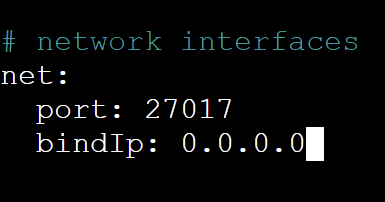
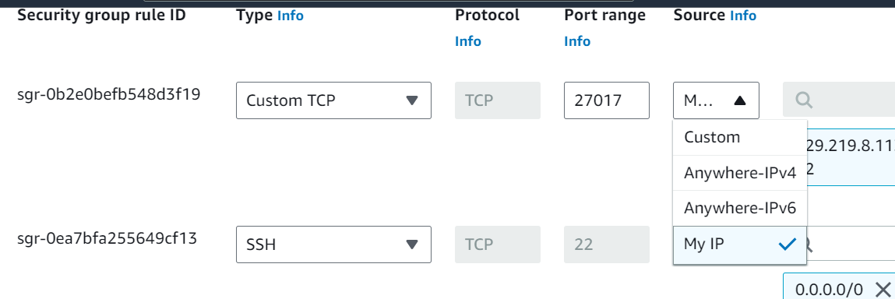

Temperature/Humidity
Tutorial
Starting a EC2 Instance
- Go to EC2 instace
- Launch instance with requirements
- OS - Ubuntu 20.04 LTS(HVM) SSD Volume Type
- Key pair - Proceed without a key pair
- Configure storage - 28GB
- Install dependencies using:
curl -s https://gist.githubusercontent.com/tejaswigowda/f289e9bff13d152876e8d4b3281142f8/raw/df37df2e16a3166e686357a045751a7c18bbeebe/installNodeMongoUbuntu16.04.sh | bash
Hosting server
Connecting to MongoDB
On the server -
- Run command to start mongo
sudo service mongod start
- Configure mongo firewall
sudo nano /etc/mongod.conf- Under
#network interfaces change net.bindIp to 0.0.0.0

-
Configure EC2 firewall
- Add inbound rule:
- Type → custom tcp
- Port → 27017
- Source → my ip

Locally -
- Download and install MongoDBCompass
- Connect using
mongodb://<ec2 public ip>:27017